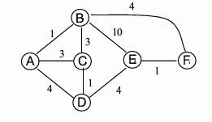
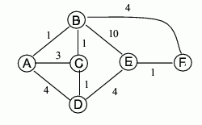
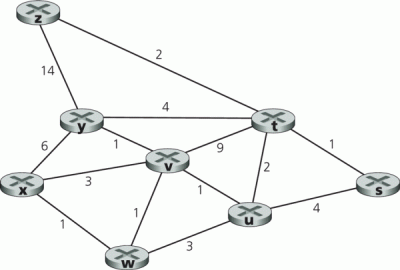

1. Æwiczenia Linux/Knoppix
2. Skaner sieci - Ethereal
3. Automaty skoñczone
4. SMTP, POP3, HTTP kontynuacja
5. Warstwa tranportowa
7. Protoko³y rutingu
8. Warstwa sieci
9. Powtórzenie materia³u
Wyj¶cie
Zadanie 1
Rozwa¿my sieæ przedstawion± poni¿ej:

poka¿ dzia³anie algorytmu Dijkstry stosowanego w protokole stan ³±cza obliczaj±c w wê¼le E ¶cie¿ki maj±ce najmniejszy koszt do pozosta³ych wêz³ów, jak równie¿ dodatkowo wypisz najkrótsze ¶cie¿ki bêd±ce rezultatem dzia³ania algorytmu.
przedstaw tablicê kosztów ¶cie¿ek, która by³a by obliczona przez algorytm wektor odleg³o¶æ w wê¼le B (nie pokazuj sposobu dzia³ania algorytmu, wystarczy wynikowa tablica).
Zadanie 2
Rozwa¿my sieæ przedstawion± poni¿ej:

poka¿ dzia³anie algorytmu Dijkstry stosowanego w protokole stan ³±cza obliczaj±c w wê¼le A ¶cie¿ki maj±ce najmniejszy koszt do pozosta³ych wêz³ów, jak równie¿ dodatkowo wypisz najkrótsze ¶cie¿ki bêd±ce rezultatem dzia³ania algorytmu.
przedstaw tablicê kosztów ¶cie¿ek, która by³a by obliczona przez algorytm wektor odleg³o¶æ w wê¼le D (nie pokazuj sposobu dzia³ania algorytmu, wystarczy wynikowa tablica).
Zadanie 3
Rozwa¿my sieæ przedstawion± poni¿ej:

Poka¿ dzia³anie algorytmu Dijkstry obliczaj±c:
najkrótsze ¶cie¿ki z wêz³a x do pozosta³ych wêz³ów
najkrótsze ¶cie¿ki z wêz³a s do pozosta³ych wêz³ów
najkrótsze ¶cie¿ki z wêz³a t do pozosta³ych wêz³ów
najkrótsze ¶cie¿ki z wêz³a u do pozosta³ych wêz³ów
najkrótsze ¶cie¿ki z wêz³a v do pozosta³ych wêz³ów
najkrótsze ¶cie¿ki z wêz³a w do pozosta³ych wêz³ów
najkrótsze ¶cie¿ki z wêz³a y do pozosta³ych wêz³ów
najkrótsze ¶cie¿ki z wêz³a z do pozosta³ych wêz³ów